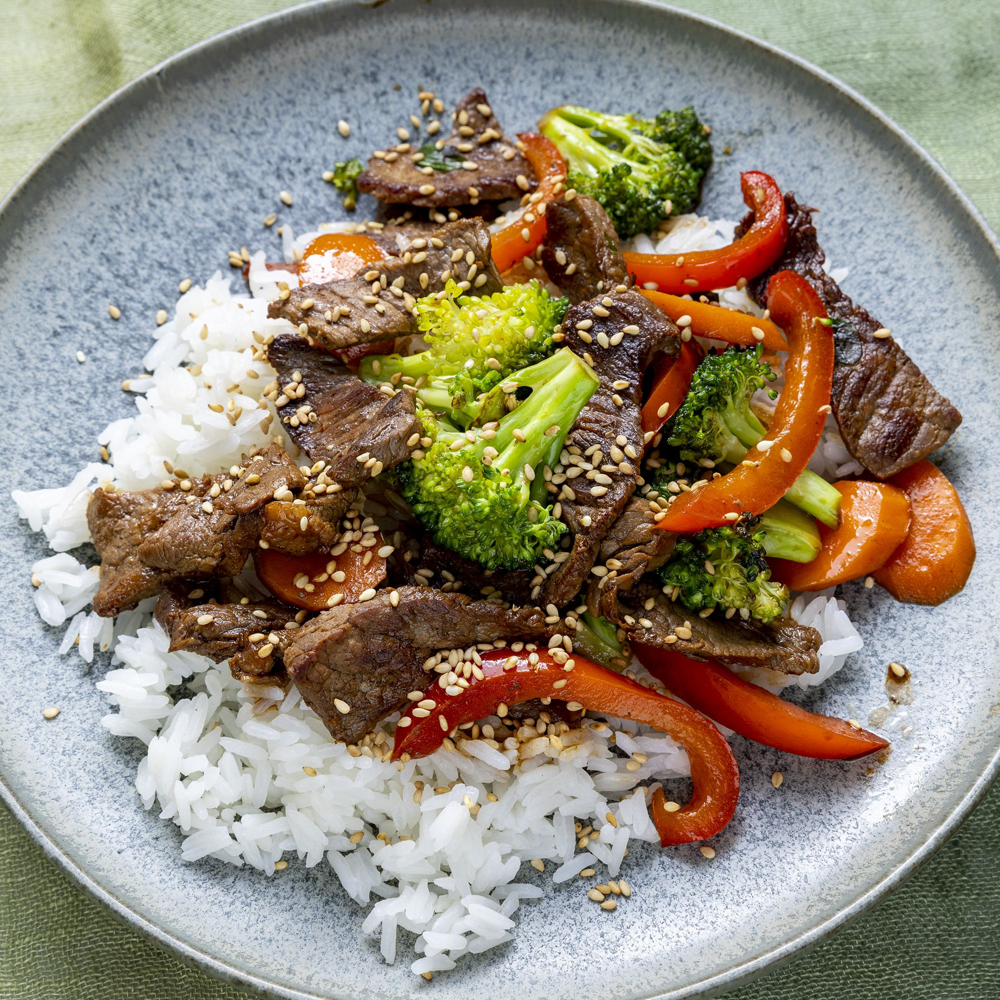

Beef Stir fry

This dish is packed with veggies, beef, and saucy flavors
It can be served with rice or lo mein noodles
- vegetable oil
- Beef Sterloin
- Broccoli
- Bell pepper
- carrots
- onions
- garlic
- soy sauce
- sesame seeds, toasted
- Heat vegetable oil in a large wok or skillet over medium-high heat.
- cook and stir beef until browned, 3 to 4 minutes.
- Move beef to the side of the wok and add broccoli, bell pepper, carrots, green onion, and garlic to the center of the wok. Cook and stir vegetables for 2 minutes
- Stir beef into vegetables and season with soy sauce and sesame seeds. Continue to cook and stir until vegetables are tender, about 2 more minutes.
- Serve with rice or Lo mein noodles